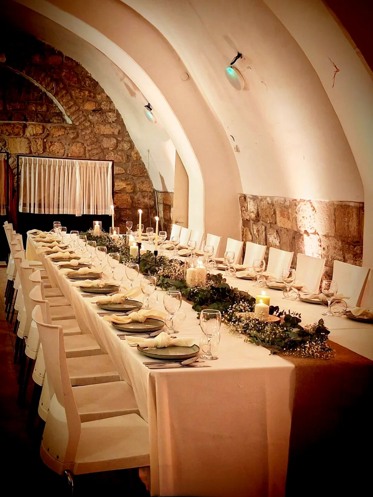
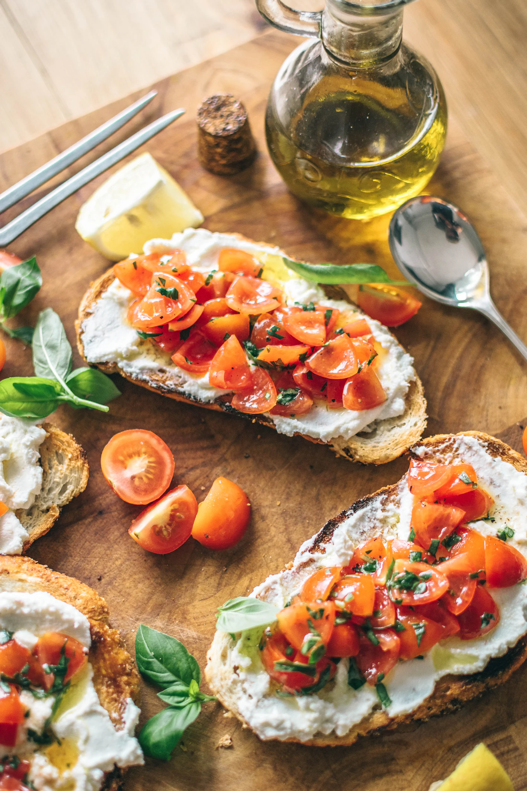

שמחות משפחתיות
שבת חתן, ברית, בר או בת מצווה, אירוסין וימי הולדת — שולחן חגיגי שלא משאיר אתכם במטבח.
קייטרינג בוטיק לאירועים
רחלי יוצרת אירוח שנעים להסתכל עליו ועוד יותר נעים לאכול ממנו — עם תפריט שמתאים לאנשים, לעונה ולאופי של האירוע.
נעים להכיר
יש אירועים שצריכים שולחן משפחתי ונדיב, ויש כאלה שדורשים הגשה מוקפדת עד הפרט האחרון. אצל רחלי מתחילים בהקשבה — ורק אחר כך בונים את התפריט.
מהמנות הראשונות ועד הקינוח, כל חלק באירוח מתחבר למראה אחד, לקצב אחד ולטעם שאתם אוהבים.
לאירוע שלכם
האירוע יכול להיות קטן ואינטימי או מלא אורחים. האוכל, ההגשה והכמויות נבנים סביבכם.
שבת חתן, ברית, בר או בת מצווה, אירוסין וימי הולדת — שולחן חגיגי שלא משאיר אתכם במטבח.
ארוחה מוקפדת אצלכם בבית, עם מנות טריות והגשה שנותנת תחושה של אירוע בלי לאבד את החום הביתי.
הרמות כוסית, ישיבות, כנסים ואירועי צוות — אוכל נוח להגשה שנראה מכובד ועובד נכון עם הלו״ז.

היד של רחלי
הצבע של המפית, הקצב שבו המנות יוצאות, מה נוח לאורחים לאכול ואיך השולחן נראה כשהם נכנסים.
רחלי מחברת בין אוכל ביתי ומוכר לבין הגשה נקייה ועכשווית. בלי רעש מיותר ובלי תפריט שמרגיש כמו של כולם.
המטרה פשוטה: שאתם תיהנו מהאורחים, והאוכל כבר ידאג לעצמו.

מהמטבח של רחלי
כמה רעיונות פשוטים, טעימים ויפים להגשה — מהסלמון החגיגי ועד הקינוח שסוגר את הארוחה.
לכל המתכוניםאיך זה עובד
מספרים לרחלי מי מגיע, איפה חוגגים ומה חשוב לכם.
מתאימים יחד את התפריט, סגנון ההגשה והכמויות.
ביום האירוע הכול מגיע מוכן, מסודר ובזמן.
שאלות נפוצות
לא מצאתם תשובה? שלחו הודעה עם תאריך ומספר אורחים.
כדאי לפנות מוקדם ככל האפשר, במיוחד לאירועים בסופי שבוע ובתקופות עמוסות. גם אם האירוע קרוב, שווה לבדוק זמינות.
כן. בשיחת ההיכרות עוברים על סוג האירוע, העדפות ואילוצים תזונתיים, ובהתאם לכך מרכיבים הצעה.
סגנון ההגשה נקבע לפי האירוע. אפשר לבנות יחד שולחן בופה, הגשה למרכז או מנות אישיות.
משאירים פרטים עם תאריך, מקום ומספר אורחים. לאחר שיחה קצרה מקבלים הצעה שמתאימה לאירוע.
מתחילים לתכנן
השאירו כמה פרטים ונחזור אליכם כדי להבין מה מתאים לאירוע שלכם.